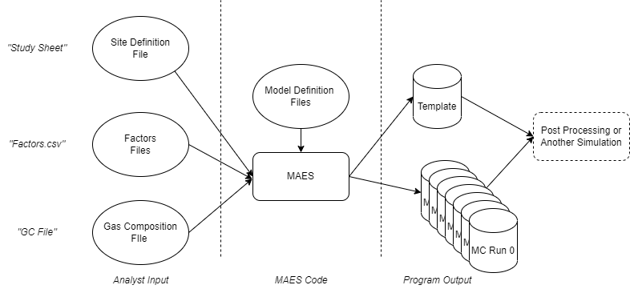

MEET File Reference

Input Files
Output Files
All simulation output files get written to a directory of the form {outputRoot}/{studyName}/MC_{scenarioTimestamp}/{MCScenario}, where:
- outputRoot
Defines the root of the output directory to redirect simulation output to a different location for large simulation runs. Default is “./”. Can be set on the command line using the ‘-or’ parameter.
- studyName
Name of the scenario definition file (without the .xlsx extension).
- scenarioTimestamp
Timestamp of the form YYYYMMDD_hhmmss to easily separate scenario runs.
- MCScenario
Monte Carlo scenario number.
Output File Relationships
- instantaneousEvents.csv -- Event Log
- metadata.csv -- Standard metadata for each element
- equipment.json -- Element instantiation parameters
- secondaryEventInfo.csv -- Additional data for specific events
- gasCompositions.csv -- Long-format gas composition values referenced in simulation
- fluidFlows.csv -- Fluid Flow definitions
- emissionTimeseries.csv -- Fluid Flow rates